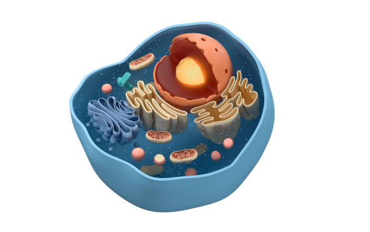

What is chemistry of life?
The chemistry of life, often referred to as biochemistry, is the branch of science that explores the chemical processes and substances that occur within living organisms. It focuses on the molecular mechanisms that underpin the structure, function, and regulation of biological molecules essential for life. This field examines how molecules like proteins, nucleic acids (DNA and RNA), lipids, and carbohydrates interact and contribute to the complex biochemical processes necessary for life. By understanding these chemical interactions, scientists can uncover the details of how cells grow, develop, and respond to their environment, which provides insights into health, disease, and many other aspects of living systems.
One real-life example of the chemistry of life is enzymatic digestion, which is crucial for breaking down the food we eat into nutrients that our bodies can use. Enzymes are specialized proteins that act as biological catalysts, speeding up chemical reactions in the body. For instance, the enzyme amylase, found in saliva, begins the digestion of starches right in the mouth. As food is chewed, amylase breaks down complex carbohydrates into simpler sugars. This process continues in the digestive system, where other enzymes like pepsin in the stomach and lipase in the intestines further break down proteins and fats. Without these enzymes, the digestion process would be far too slow for us to extract the necessary nutrients efficiently. This biochemical process illustrates how vital the chemistry of life is for maintaining health and enabling our bodies to function properly.
Why is it essential to learn chemistry of Life?
Learning the chemistry of life is essential for understanding how diseases develop and function. At its core, many diseases are the result of disruptions in the chemical processes that occur within cells. For instance, cancer often arises from genetic mutations that alter the normal biochemical pathways of cell growth and division. By studying the chemistry of life, scientists can identify these molecular changes and develop targeted treatments. For example, understanding the biochemical basis of diseases like diabetes or Alzheimer’s disease can lead to more effective medications and therapies. This knowledge not only helps in diagnosing and treating existing conditions but also aids in developing preventative measures and vaccines to protect against diseases before they occur.
The chemistry of life is crucial for advancing medical and biotechnological innovations. By understanding the chemical interactions that govern biological systems, researchers can design and develop new drugs, therapies, and diagnostic tools. For instance, the development of antibiotics like penicillin involved understanding how certain chemicals inhibit bacterial growth. More recently, biochemistry has enabled the creation of sophisticated biotechnological tools such as CRISPR-Cas9, which allows for precise editing of genetic material. This technology has vast applications, including gene therapy, agricultural improvements, and synthetic biology. Learning the chemistry of life equips scientists with the knowledge needed to push the boundaries of these fields and create novel solutions to complex biological challenges.
Understanding the chemistry of life also has practical implications for improving everyday health and nutrition. Knowledge of how different nutrients interact with our bodies on a chemical level allows for better dietary choices and personalized nutrition plans. For example, understanding how vitamins and minerals contribute to biochemical reactions in the body helps in formulating dietary supplements and managing nutritional deficiencies. Additionally, insights into how metabolism works can guide dietary recommendations for managing conditions such as obesity or heart disease. By applying principles of biochemistry, individuals can make informed decisions about their health and well-being, ultimately leading to a healthier lifestyle and better quality of life.
Main Concepts
Chemical Elements and Compounds
The chemistry of life fundamentally revolves around the chemical elements and compounds essential for biological processes. Elements such as carbon, hydrogen, oxygen, nitrogen, phosphorus, and sulfur are the building blocks of life, forming the backbone of organic molecules. These elements combine to create various compounds that are crucial for life, including carbohydrates, proteins, lipids, and nucleic acids. Carbohydrates provide energy, proteins serve as the building blocks for tissues and enzymes, lipids make up cell membranes and store energy, and nucleic acids carry genetic information. Understanding these elements and their compounds helps us grasp how biological systems are structured and how they function at the molecular level.
Macromolecules
Macromolecules are large, complex molecules that play key roles in the structure and function of cells. There are four primary types of macromolecules: carbohydrates, proteins, lipids, and nucleic acids. Carbohydrates, like starch and glucose, are vital for energy storage and supply. Proteins, composed of amino acids, perform a wide range of functions including enzymatic activity, signaling, and structural support. Lipids, such as fats and oils, are essential for energy storage and form the structural components of cell membranes. Nucleic acids, including DNA and RNA, are crucial for storing and transmitting genetic information. Each type of macromolecule has unique properties and functions that contribute to the complexity of living organisms.
Enzymes
Enzymes are specialized proteins that act as biological catalysts, speeding up chemical reactions within cells. They work by lowering the activation energy required for reactions to occur, thus making biochemical processes more efficient. Enzymes are highly specific, meaning each enzyme catalyzes a particular reaction or a set of related reactions. For example, digestive enzymes like amylase break down carbohydrates into simpler sugars, while proteases help in the digestion of proteins. The study of enzymes involves understanding their structure, function, and mechanisms of action, which is crucial for comprehending how biochemical reactions are regulated and how metabolic pathways are controlled.
Cell Structure and Function
Cell structure and function are central concepts in the chemistry of life, as the cell is the basic unit of life. Cells are organized into various compartments, each with specific functions, including the nucleus (containing genetic material), mitochondria (producing energy), and the endoplasmic reticulum (synthesizing proteins and lipids). The cell membrane, composed of a lipid bilayer with embedded proteins, regulates the movement of substances in and out of the cell, maintaining homeostasis. Understanding these structures and their functions helps in studying how cells carry out essential life processes, such as metabolism, energy production, and communication with other cells.
Biochemical Pathways
Biochemical pathways are sequences of chemical reactions that occur within a cell to maintain life. These pathways include metabolism, where nutrients are converted into energy and building blocks, and signaling pathways, where cells respond to external signals and regulate various functions. Metabolic pathways, such as glycolysis and the Krebs cycle, involve a series of enzyme-catalyzed reactions that produce energy and synthesize necessary molecules. Signaling pathways involve molecules like hormones and neurotransmitters that transmit information and coordinate cellular responses. Studying these pathways provides insight into how cells function and adapt to changes, which is essential for understanding health, disease, and the impact of drugs and treatments.
Research and Studies
The Central Dogma of Molecular Biology (1957)
The Central Dogma of Molecular Biology, proposed by Francis Crick in 1957, outlines the flow of genetic information within a biological system. According to this concept, genetic information flows from DNA to RNA to proteins. This model explains how the information encoded in genes is translated into functional proteins, which perform various roles within the cell. The Central Dogma has been fundamental in understanding gene expression, protein synthesis, and the regulation of cellular processes. It has also been pivotal in the development of technologies such as recombinant DNA technology and CRISPR gene editing.
Discovery of Enzymes and Their Mechanisms (20th Century)
The study of enzymes and their mechanisms has been critical in the chemistry of life. Enzymes, discovered in the late 19th and early 20th centuries, are biological catalysts that accelerate chemical reactions in cells. The elucidation of enzyme mechanisms, including the lock-and-key model by Emil Fischer and the induced fit model by Daniel Koshland, has enhanced our understanding of enzyme specificity and catalysis. This research has led to the development of numerous applications, from industrial processes to medical diagnostics and drug design, by manipulating enzyme activity and improving efficiency in biochemical reactions.
Discovery of the Role of Ribosomes in Protein Synthesis (1950s-1960s)
In the 1950s and 1960s, significant research was conducted to understand the role of ribosomes in protein synthesis. The work of researchers like George Palade, who used electron microscopy to visualize ribosomes, revealed that these cellular structures are crucial for translating messenger RNA (mRNA) into proteins. This discovery was pivotal in understanding the process of translation, where ribosomes read the sequence of mRNA and assemble amino acids into proteins. This research not only advanced the fundamental knowledge of cellular biology but also paved the way for developments in biotechnology and pharmaceutical industries, including the production of therapeutic proteins and vaccines.
The Role of ATP in Cellular Metabolism (1929-1950s)
The discovery of adenosine triphosphate (ATP) as the primary energy carrier in cells was a major breakthrough in the study of biochemistry. Early research in the late 1920s and 1930s by scientists like Fritz Lipmann identified ATP as the molecule that stores and transfers energy within cells. The elucidation of ATP’s role in cellular metabolism, including its involvement in processes like muscle contraction, active transport, and biochemical synthesis, was further developed through the work of scientists such as Hans Krebs and Peter Mitchell. Mitchell's chemiosmotic theory, proposed in the 1960s, described how ATP is generated through the electron transport chain and proton gradient across the mitochondrial membrane. Understanding ATP’s role has been fundamental in studying energy metabolism, cellular processes, and the development of energy-related therapies.
Facts about Chemistry of Life
Water is essential to life due to its unique chemical properties, but did you know it has unusual behaviors that are crucial for biological systems? For example, water has a high specific heat capacity, meaning it can absorb and release a lot of heat without significantly changing its own temperature. This property helps regulate the temperature of living organisms and environments. Additionally, water's high surface tension allows it to form droplets and move through plant capillaries—a process vital for nutrient transport in plants.
Proteins are complex molecules that need to fold into specific shapes to function properly. However, this folding process can sometimes go wrong, leading to misfolded proteins that could cause diseases. To assist with proper protein folding, cells use special molecules known as chaperones or heat shock proteins. These molecular chaperones help proteins fold correctly and prevent aggregation of misfolded proteins, which is crucial for maintaining cellular health and preventing neurodegenerative diseases.
The chemistry of life extends to the regulation of circadian rhythms, the internal clocks that govern the daily cycles of biological processes. These rhythms are controlled by a series of biochemical reactions involving proteins and enzymes that oscillate with a 24-hour cycle. One key protein, called CLOCK, interacts with other proteins to regulate the expression of genes involved in sleep, metabolism, and hormone production. This rhythmic regulation affects various aspects of health and well-being.
One fascinating fact about the chemistry of life is that the genetic code is nearly universal across all living organisms. This means that the same set of codons—sequences of three nucleotides that specify amino acids—encode proteins in nearly all forms of life, from bacteria to humans. This universality supports the idea of a common origin of life and allows for the transfer of genes between different organisms, which is used in genetic engineering and biotechnology.
Enzymes are remarkable for their ability to catalyze biochemical reactions with extraordinary precision and speed. What’s less known is that enzymes can operate at extremely low concentrations and still be highly efficient. Enzymes achieve this through a process known as "induced fit," where the enzyme's active site changes shape to better bind to the substrate. This precision allows enzymes to lower activation energy and drive reactions forward, making biochemical processes in living organisms highly efficient and finely tuned.
Quiz
1. How did the Hubble Deep Field observation in 1995 change our understanding of the universe?
2. Describe one contribution of ancient Babylonians to early astronomy.
3. Explain the impact of the Islamic Golden Age on the development of astronomy during the medieval period.
4. How did the heliocentric model proposed by Copernicus revolutionize our understanding of the solar system?
5. What are some of the key research areas in contemporary astronomy, and why are they significant?